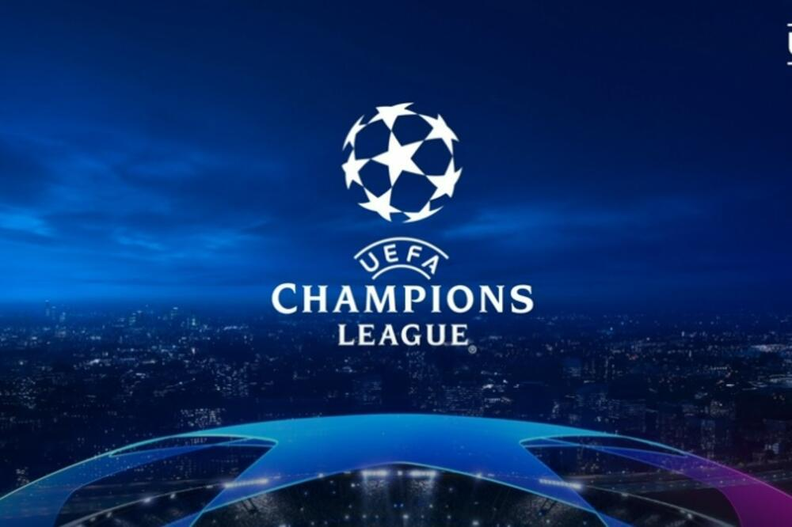
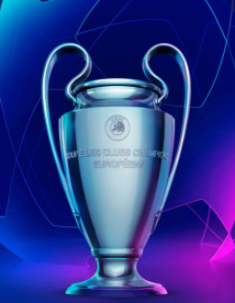

UEFA Liga šampiona (engl. UEFA Champions League) je najjače i najprestižnije evropsko, klupsko fudbalsko takmičenje. Organizovano je od strane UEFE i u njemu učestvuju sve njene članice. Do sezone 1991/92. takmičenje se nazivalo Kup evropskih šampiona (engl. Cup of European Champions), Evropski kup šampiona (engl. European Champions Cup; poznata još kao Kup šampiona (engl. Champions Cup)) ili Evropski kup (engl. European Cup), a od sezone 1992/93. deo se igra u grupama i menja naziv u UEFA Liga šampiona. Pored ovog takmičenja, pod vođstvom UEFA-e igra se još i Liga Evrope (do 2009. Kup UEFA), dok je Kup pobednika kupova UEFA ukinula nakon sezone 1998/99. a Intertoto kup 2008. Trenutni šampion UEFA Lige šampiona je Bajern iz Minhena koji je u finalu 23.avgusta 2020. na stadionu Stadion svetlosti u Lisabonu pobedio ekipu PSŽ i tako osvojio šestu titulu šampiona Evrope.
Takmičenje počinje sa četiri kola kvalifikacija. Zavisno od koeficijenta lige iz koje dolaze i pozicije koju su ostvarili prethodne sezone klubovi se uključuju u Ligu šampiona u nekom od ova četiri kola kvalifikacija. Klubovi sa većim koeficijentima su nosioci i oni se ne mogu susresti međusobno u okviru jednog kola kvalifikacija. U svakom kolu igraju se po dve utakmice jedna kući i jedna u gostima. Od sezone 2009/10. počevši od trećeg kola kvalifikacija klubovi su podeljeni na dva dela, jedan za nacionalne prvake i jedan za klubove koji su kvalifikacije obezbedili završivši u nacionalnom prvenstvu od 2-4. mesta, a to je urađeno da bi se nacionalnim prvacima olakšao put do takmičenja po grupama. Isti sistem za prvake i ostale klubove funkcioniše i u poslednjem kolu kvalifikacija, plej ofu, odakle se pobednici pridružuju klubovima koji su se kroz plasman u domaćoj ligi plasirali direktno u grupe Lige šampiona i prošlogodišnjem pobedniku. Klubovi koji su poraženi u trećem kolu kvalifikcija i plej ofu Lige šampiona svoje takmičenje nastavljaju u Ligi Evrope. Nakon završenih kvalifikacija 32 kluba bivaju podeljena u osam grupa od po četiri ekipe. Igra se mini-liga u kojoj svaki klub sa svakim od tri protivnika igra kući i na strani. Na kraju dva prvoplasirana se plasiraju u osminu finala Lige šampiona, dok trećeplasirani nastavlja takmičenje u Ligi Evrope. Šesnaest klubova igra dalje u završnici, počevši od osmine finala, pobednici ulaze u četvrtfinale, polufinale i na kraju se dva najbolja sreću u finalu. Na sve utakmice koje klubovi igraju u kvalifikacijama i završnici, osim finala, odnosi se pravilo gola u gostima, a ako se na taj način ne može odrediti pobednik igraju se produžeci (dva po 15 minuta) te se na kraju izvode penali. Finale se igra na predodređenom stadionu (ne nužno neutralnom) i igra se samo jedna utakmica. Izvlačenje parova i grupa je napravljeno tako da se klubovi iz iste zemlje ne mogu sresti pre četvrtfinala. Sistem takmičenja koji se trenutno koristi je usvojen 2009. godine.
| Ime kluba | Broj titula |
|---|---|
| Real Madrid | 13 |
| Milan | 7 |
| Bajern Minhen | 6 |
| Liverpul | 6 |
| Barselona | 5 |
| Inter | 3 |
| Mančester Junajted | 3 |